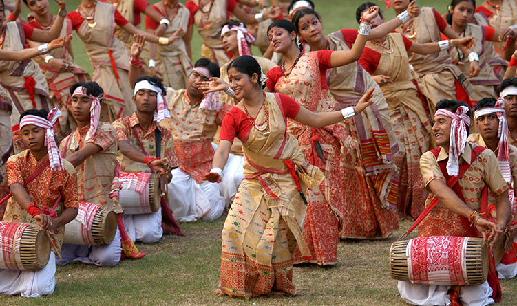
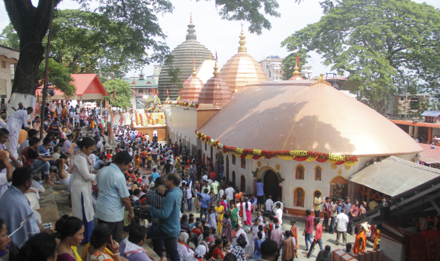
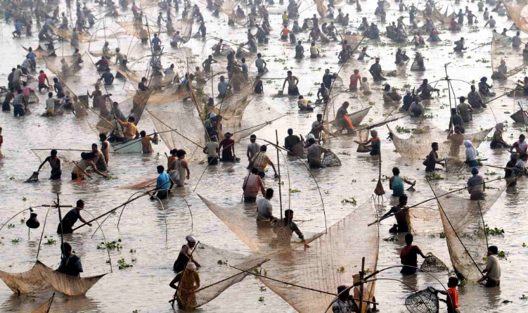

The Bihu festival:
The Bihu festival is the first thing that comes to the mind when we speak of Assamese culture. This colourful festival is celebrated thrice in a year, each having their own significance of agriculture. The three Bihu festivals namely ‘Bohaag Bihu’ is celebrated in the month of ‘Bohaag’ (mid-April), Magh Bihu celebrated in the month of ‘Magh’ (mid-January) and Kati Bihu celebrated in the month of ‘Kati’ (mid-October).
Bohaag Bihu, the spring festival, is the festival of merrymaking and it also marks the Assamese New Year. The Bihu songs and dances are integral part of this Bihu. Magh Bihu, on the other hand, is the harvest festival and is marked by feasting. Various types of delicacies are prepared on the occasion of this Bihu. Kati Bihu is a more sombre and subdued occasion and it neither involves merrymaking nor feasting. It is marked by prayers for good harvest. (check details of each of the three Bihus).

Ambubachi Festival:
Assam is known for its tea plantations, one-horned rhinos, wild orchids and its scintillating charm but Assam is also a wonderland of spiritual experiences especially Kamakhya Temple being the epicentre of it, particularly during Ambubachi Mela. One of the unique festivals of India, it is the most significant celebration of Kamakhya Temple which is the yearly menstrual cycle of Mother Earth, symbolised as Mother Goddess Kamakhya.
During Ambubachi Mela, people participate in many kinds of restrictions. The Temple celebrates the feminine reproductive energy and natural forces of fertility. All temples in Assam remain closed for three days and are opened amid a lot of celebration.
Devotees from across the country travel to Kamakhya Temple to worship the Mother Goddess for fertility. The devotees sing kirtan all night long, allowing the Divine Mother to relax in her seclusion while sadhus and saints chant outside the shrine.

Jonbeel Mela:
Jonbeel Mela is held every year during winter at Jonbeel of Jagiroad, 59 kms east of Guwahati. It is such a spectacular fair where they promote harmony and brotherhood amongst various tribes and communities. As per the history King Gobha Raja of the Tiwa tribe held political parleys with the Ahom king and other hill chiefs near the Jonbeel in the 15th century, fairs were held during the meet and people from every kingdom embraced each other and barter their goods.
Various communities like Tiwa, Karbi, Khasi and Jaintia come down from the hills with their various products just few days before the ‘mela’. A big bazaar is held here where members of various tribes exchange their products with local people in barter system which is very rare nowadays. They perform ‘Agni-Puja’ or fire-worship before the mela for the welfare of mankind.
The notion of togetherness in variety makes this mela stand out from other fairs or festivals.